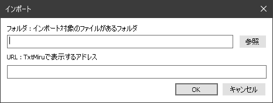

はじめに
TxtMiruは、「Web小説」や「青空文庫形式」の作品を書籍のように縦書で表示するソフトです。
導入方法
インストーラ形式
ファイルを解凍して、インストールを行ってください。
(インストーラ形式もZIP形式で配布しています)
Windows Vista, Windows 7, Windows 8, Windows 10の場合、Program Filesにフォルダにアプリケーションをおくと
設定ファイルが保存されず場合によってはエラーが発生します。
Program Filesにインストールする場合には、インストーラ形式を使用してインストールを行ってください。
- 解凍したファイル内の「TxtMiru2.exe」を実行します。
- 以下の画面が表示されるので 「次へ」を選択します。
- インストール先を選択して「次へ」を選択します。
- スタートメニューの名前を設定後「次へ」を選択します。
- TxtMiruのショートカットをデスクトップに表示する場合には、
「デスクトップにショートカットを作成」にチェックを入れ 「次へ」を選択します。
- 上記、すべてよければ「インストール」を選択します。
- インストールが開始されます。
- 以下の画面が表示されれば、インストールは完了です。
ZIP形式
特に設定はありません。
任意のフォルダに解凍して実行してください。(USBから起動する際には、こちらを)
最新版を入手
最新版は サイト：https://sites.google.com/site/gearsns/ にて配布しています。
※変更点は当サイトの「お知らせ」を確認ください。
青空文庫の公開作品を読む
「ファイル」-「青空文庫」より 青空文庫の公開作品一覧を表示します。
初めて使用する際には、確認画面が表示されます。
「はい」を選択して 青空文庫のサイトから一覧を取得してください。
新しく追加された作品を読む
左側のリストの「新しく追加された作品」を選択すると
最近１ヶ月の間に登録された青空文庫の公開作品一覧が表示されます。
※()内には、「新しく追加された作品」の件数が表示されます。
作品を読む際は、読みたい作品を選択して「表示」ボタンを押下します。
※ダブルクリックでも表示することができます。分野別
日本十進分類法（NDC）による分野別に青空文庫の公開作品を表示します。著者別
著者別に青空文庫の公開作品を表示します。作品別
作品別に青空文庫の公開作品を表示します。最新の情報に更新
(1). 作品一覧は自動では更新されません。
「最新の情報に更新」ボタンを押下して青空文庫のサイトから最新の情報を取得してください。
(2). 更新する情報は、予めダウンロードしておいた(zip,csv)ファイルから取得することもできます。
(3). 一覧の更新日が表示されます。作品の検索
著者名やタイトルで青空文庫の作品を検索することができます。
右上の検索ボックスに、検索したい文字を入力し「検索」ボタンを押下してください。お気に入りとの連動
お気に入りに登録されている作品には、「☆」マークが表示されます。
Web小説を読む
小説を読もう！ 等のWeb小説をURL指定で直接読むことができます。
- URLを指定して表示
「ファイル」-「URLから開く」
http[s]://から始まるアドレスを入力します。 - ブラウザで表示しているWebページを表示
ブラウザで表示したいサイトを開いてから
「ファイル」-「ブラウザで表示中のページを開く」で表示します。
- ドラッグアンドドロップで表示
ブラウザからURLリンクをドラッグアンドドロップ
青空文庫形式の作品を読む
- テキストファイル
メニュー：「ファイル」-「開く」よりファイルを指定します。
ドラッグ＆ドロップによる指定も可能です。 - 書庫ファイル
(1). メニュー：「ファイル」-「開く」よりファイル選択画面を表示します。
(2). 「全てのファイル」を選択し 書庫ファイルが表示されるようにします。
書庫ファイルの表示には、統合アーカイブプロジェクトライブラリの導入が必要になります。
caldixを使用すると自動で最新版をインストールできます。
| 形式 | ファイル |
|---|---|
| ZIP形式 | UNZIP32.DLL |
| 7z形式 | 7-ZIP32.DLL |
| Cab形式 | CAB32.DLL |
- クリップボード
メモ帳などで「コピー」したテキストもテキストファイルと同じように表示することができます。
見出し・栞を表示する
見出しと栞の一覧を表示します。

1. 指定した見出し・栞のページに移動
2. 表示しているページに栞をはさみます。
3. 選択した栞の削除
4. 常に手前に表示
5. 栞を表示
6. 見出しを表示
- 栞1-10 へ移動
栞の一覧に表示されている各行のページに移動します。
※メニュー、ショートカットキーに登録できるのは、最大10件までです。
見出し
| ファイル | 表記 |
|---|---|
| 青空文庫形式 | 見出し |
| 階層付きテキスト(WzMemo) | 行頭に . |
| HTML | H1,H2…タグや ANCHORタグ |
※階層付きテキストの使用は、設定により切り替え可能。
お気に入りで作品を管理する
1. フォルダ
2. お気に入りの一覧
3. 詳細
フォルダ
初めて使用する場合には、まずフォルダを追加します。
- フォルダは階層で管理できます。
- フォルダの並び順は、ドラッグ&ドロップで行います。
お気に入り
- TxtMiruで表示したことのある作品は URLからタイトル/作者名を取得することができます。
- 画像を指定しない場合は、No Image画像が設定されます。
詳細
見出しの一覧とどのページまで読んだかが表示されます。
見出しをダブルクリックすることで直接各章から読むことができます。
小説を読もう！の場合、各章へのリンクが見出しとして表示されます。
栞の一覧
URLに「:Siori」と入れると、ファイルを跨いだすべての栞の一覧が表示されます。
最近読んだページ
URLに「:LatestN」(Nは数字)と入れると、最近読んだページ(N件)が表示されます。
よく読むページ
URLに「:VisitN」(Nは数字)と入れると、よく読むページ(N件)が表示されます。
画面を広く使う
全画面表示
全画面で表示することができます。
（タスクバーの部分まで画面が大きくなります）
※元に戻すには、マウスカーソルを画面上に移動した際に表示されるメニューの「全画面表示」を選択するか、
ショートカットキー(Ctrl + Enter)にて元のサイズに戻すことができます。
メニュー・スクロールバーを自動的に隠す
メニュー・スクロールバーを隠すことで
タスクバーを表示したままで、できる限り画面を大きく取ります。
シングルページ表示
画面に合わせてシングルページで表示できます。
| モード | ２ページ分 | 中間 | １ページ分 |
|---|---|---|---|
| 常に２ページで表示 | |||
| 画面比率で切り替え | |||
| シングルページ（両端揃え） | |||
| シングルページ（中央寄せ） |
※初期設定は、常に２ページで表示が選択されています。
※画面比率で切り替えは、左右の余白がない場合にのみシングルページ表示になります。
操作
キー割り当て
以下は、初期設定時の主なキー割り当てです。
| 操作 | キー | 画面 |
|---|---|---|
| 次のページを表示 | 「←」、「スペース」 | 画面の左側をクリック |
| 前のページを表示 | 「→」、「Shift」+「スペース」 | 画面の右側をクリック |
| 先頭ページへ | 「Home」 | |
| 最終ページへ | 「End」 | |
| (履歴)前のページへ戻る | 「Back Space」 | |
| (履歴)次のページへ進む | 「Shift」+「Back Space」 | |
| ページを指定して移動 | 「Ctrl」+「G」 | |
| ファイルを開く | 「Ctrl」+「O」 | |
| URLから開く | 「Ctrl」+「L」 | |
| 読み直し | 「F5」 | |
| 全画面表示 | 「Ctrl」+「Enter」 | |
| 検索 | 「Ctrl」+「F」 | |
| 次を検索 | 「F3」 | |
| 前を検索 | 「Shift」+「F3」 | |
| ヘルプを表示 | 「F1」 |
キーの割り当ては、メニュー：「ツール」-「設定」-「キーの割り当て」より変更することができます。
- 選択モード
閲覧モードと文字選択モードの切り替えを行います。
選択モード時は、文字の選択・クリップボードへのコピーが使用できます。 - 読み直し
表示中の内容を再度読み直します。
※ファイルの内容を編集した際等、表示を更新する場合に使用します。(編集者向け) - 名前を付けて栞を保存
栞を指定したファイルに保存します。 - 栞の自動保存
終了時、最後に見たファイルとページを自動的保存し 次回起動時にそのページを表示します。
小説の検索/感想の投稿
TxtMiruには「小説家になろう」などのサイトの検索・投稿機能はありません。
代わりに「外部プログラム」から普段お使いのブラウザで現在開いている小説のページを表示することができます。
設定は「外部プログラムで開く」を参照してください。
辞書で調べる
選択した文字を辞書で引くことができます。
EBWin4を使用した例
「設定」-「オプション」より
自動でクリップボードにコピーするかわりに、以下のプログラムを実行する にチェックを付け
辞書アプリケーションを設定します。
1. プログラム名
2. プログラム引数
例：EBWin4を"C:\Program Files (x86)\EBWin4"にインストールした場合
| プログラム名 | プログラム引数 |
|---|---|
| "C:\Program Files (x86)\EBWin4\EBWin4.exe" | -S="%1" |
※プログラム名に「https://www.google.co.jp/search?q=%1」のように記入するとgoogleで検索することができます。
検索
文書内を検索し、見つかったページに移動します。
- 次を検索 (F3)
今の場所よりも後ろでテキストを検索し、見つかったページに移動します。 - 前を検索 (Shift + F3)
今の場所よりも前でテキストを検索し、見つかったページに移動します。 - 正規表現を使用(2.0.10.0)
正規表現を用いて検索を行います。
文字を拡大して表示する
ルーペ（拡大表示）の表示／非表示を切替えます。
拡大率は、マウスホイールの上下 または、メニューからの拡大率の指定で変更することができます。
- カーソル位置を拡大する
マウスカーソル周辺の文字を拡大します。
※チェックをつけない場合、ルーペ窓位置の文字を拡大します。 - 拡大率
拡大率（100%, 150%, 200%, 400%）を選択します。
編集
外部プログラムで開く
現在表示しているファイルを外部プログラムで開きます。
例：
| No. | プログラム名 | プログラム引数 | メニュー名 |
|---|---|---|---|
| 1 | microsoft-edge:%1 | edgeで開く | |
| 2 | C:\Program\Vivaldi\Application\vivaldi.exe | "%1" | vivaldiで開く |
| 3 | "C:\Program Files\Mozilla Firefox\firefox.exe" -url | "%1" | firefoxで開く |
※「メニュー名」を指定するとポップアップメニューに割り当てた際に「外部プログラム」が入力した名前で表示されます。
コピー
選択した文字をクリップボードにコピーできます。
※「メニュー」-「編集」-「コピー時、ルビを優先」にチェックを付けるとコピー時にルビが振られている箇所はそちらがコピーされます。
辞書で調べる機能とは併用できません。
コピーを使用する際には、「メニュー」「設定」「オプション」「自動でクリップボードにコピーするかわりに、以下のプログラムを実行する」のチェックを外しておいてください。
※「辞書で調べる」を参照ください。
スタイルによる表示形式の管理
標準では「新書縦２段」か「文庫本」のどちらかを選択できます。
※未設定の場合には、「文庫本」が選択されます。
設定画面で指定したレイアウトの調整を行うことができます。
-文字サイズを計算
用紙のサイズと行数、文字数より文字サイズを自動的に計算します。
-別名で保存
別名で保存するとユーザーフォルダ「％LOCALAPPDATA%\TxtMiru\Layout」に、スタイルファイルが作成されます。
不要になった場合は、エクスプローラーからファイルを削除してください。
画像にして保存する
表示している内容を画像(png)形式で出力することができます。
ページ内の位置を確認
- スクロールバーを表示すると、文書のどの辺りを読んでいるか確認できます。
- タイトルバーに、ページ数を表示することもできます。
「設定」「オプション」「タイトルバーの書式 」を参照ください。 - 画面に表示されているページにマウスカーソルを合わせると、ページ/総ページを確認することができます。
自動的に再表示
ファイルの変更を監視して 変更された場合、自動的に再表示することができます。
設定
フォントなど、画面の基本設定
| 項目 | 説明 |
|---|---|
| フォント | 本文、ルビ、注釈は 縦書きで表示されます。 フォントは、先頭が@になっているフォントを選択してください。 |
| 文字間隔 | メイリオフォントのように フォントそのものに空きがあり間延びしてしまうものに対して 文字間隔を設定することで、調整を行うことができます。 (メイリオフォントの場合、1.4倍程度に設定すると空きを詰めることができます。) ※通常は、0を指定しておきます。 |
| スタイル | 標準・太字から選択できます |
| アンチエイリアス | 通常とLCD(液晶)のどちらかを選択できます |
| ルビ | ルビの位置は、肩付き と 中付きのどちらかを選択できます |
| 縦中横にする最大文字 | 半角数字を自動的に、縦中横にする場合の最大文字数を指定します |
| 合成 | 「゜」「˝」を直前の文字と合成する場合にはチェックをいれます |
| 起動時に、Fontフォルダ以下のフォントをロードする | フォントフォルダに配置されたフォントをTxtMiruで使用できるようにします。 |
| 階層付テキスト形式 | 階層付テキストの書式に従い見出しの一覧を自動で作成します。 詳細は、http://ja.wikipedia.org/wiki/ アウトラインプロセッサを参照ください。 |
| ページ内で最初に見つかった見出しを柱にする | 柱にする見出しを選択します。チェックがなければ最後に見つかった見出しが柱になります。 |
| 背景画像 | ドラック&ドロップでも設定することができます。 また、半透明の画像を指定しておくと 色設定の「ページ」の色が透過部分に反映されます。 ※デフォルトの画像は、本文欄が透明な画像になっています。 |
| ページめくりアニメーション | ページを移動する際にアニメーションを行います。 ※アニメーションの速度は、任意に設定できます。お使いの端末の設定に合わせて調整してください。 |
| 挿絵をページ一杯に表示 | ページの余白を無視してページ全体に表示します |
| 挿絵の白色部分を透過する | 白色部分を透明色として処理します |
| 挿絵で改ページを行う | 挿絵があればその前の時点で改ページを行います |
| レイアウト | 文庫・新書などのあらかじめ設定したスタイルからレイアウトを選択します |
| (暫定)Dark mode対応 | Windows10の設定でDark modeに変更された場合、お気に入り画面などをDark modeにします。 |
| 名前を付けて保存 | 設定項目を名前を付けて保存します。 「メニュー」-「ツール」-「スタイル」より選択できるようになります。 |
栞/お気に入り
| 項目 | 説明 |
|---|---|
| 栞の自動保存 | 終了時に、現在表示していたページを保存します。 お気に入りと一緒に管理されます ※次回起動時に、最後に表示していたページを開きます。 また、「栞ファイルは栞フォルダに保存」を指定した場合 栞フォルダに最大「n」個までの栞ファイルを保存します。 |
| 栞ファイルに関連付け | 栞ファイル .siori にTxtMiruを関連付けます。 (.sioriファイルに関連付けられ、前回閲覧していたページから表示できるようになります) ※TxtMiruを削除する際には、先に関連付けの削除を行ってください。 |
| 関連付け解除 | 関連付けた 栞ファイル .siori を解除します |
| お気に入り画面 背面に移動を許可 | お気に入り画面は、通常 常に手前に表示されます。 チェックを入れると、お気に入り画面を表示したまま、TxtMiruの背面に移動させることができます |
ルビ一覧
| 項目 | 説明 |
|---|---|
| ルビ一覧への除外設定 | 正規表現でルビ一覧への除外の設定を行います。 |
HTML
| 項目 | 説明 |
|---|---|
| 画面サイズ | ヘッダやリンクに使用されている小さい画像を表示の対象から外します。 |
| アプリケーション名一覧 | 「ブラウザで表示中のページを開く」際のブラウザ名（DDEの設定） 一覧に記載された順にブラウザを検索します |
| 接続設定 | |
| IEの設定を使用する | Internet Explorer で設定している設定を使用します。 |
| Proxyを使用 | プロキシを設定します。設定は、アドレス:ポートの形式で設定します。 例：localhost:8080 |
| ダイアログを表示しない | エラーなどのダイアログを表示しません |
| スクリプトを実行しない | JavaScriptの実行を行いません |
| URLのブロックを有効化 | 広告など不要なページの画像、JavaScriptのロードを抑制します。 |
| キャッシュからの読み込みを有効化 | キャッシュを使用する際には、チェックを入れます。 URLのブロックも有効化にもチェックを入れる必要があります。 |
オプション
| 項目 | 説明 |
|---|---|
| ウインドウサイズの保存 | 終了時に、ウインドウサイズ、位置を保存しておき、 次回 同じサイズ、位置で起動するようにします。 |
| ファイルの更新時、 自動的に再読み込みを行う | ローカルファイルの場合、ファイルの更新を監視し変更があれば、再度、読み直します |
| 非選択モードの時、 シフトキー押下で一時的に 選択モードに切り替える | 一時的に選択モードに切り替える設定を行います |
| キーリピートを有効にする | キーを押し続けた場合に、連続でボタンを押下したことにします。 |
| 文字選択終了後、 自動的にクリップボードにコピーする | 自動的にクリップボードに選択した内容がコピーされます |
| 自動でクリップボードにコピーする代わりに、プログラムを実行する | 選択した文字で辞書などのソフトを起動することができます |
| Pre-Parserを使用する | 小説家になろうなどのタグの変換を行うScriptを使用しします |
| タッチ操作時、 メニューの文字間隔を広くする | タッチ操作時、メニューが操作しづらい場合は、こちらにチェックを入れてください。 |
| 書庫ファイル | 書庫ファイルの展開時、除外するファイルサイズを指定します。 |
| タイトルバーの書式 | タイトルバーの書式を設定できます %p:プログラム名,%v:バージョン,%T:タイトル,%A:著者,%P:ページ,%N:ページ数,%F:ファイル名(フルパス),%f:ファイル名 |
| 画像表示用(SUSIE)プラグインフォルダ | SUSIEプラグイン。SUSIEプログインを使用した画像表示にも対応しています。 Jpeg,PNG,bmp以外の形式の画像を読み込む場合には、SUSIEプラグインを導入してください。 詳細は、http://www.digitalpad.co.jp/~takechin/ または、http://www2f.biglobe.ne.jp/~kana/index.html を参照ください。 |
| 外部プログラム | 表示しているファイルを外部プログラムで開く際のプログラム名を指定します |
| リンククリック時に使用する外部プログラム | リンク先を開く際のプログラム名を指定します |
| 文字コード判別 | 文字コード判別処理を別のプログラムで行うことができます。 ※別途、DLLでプログラムを用意しておく必要があります |
| ファイルの種類 | 各種類を示す拡張子を設定できます。 |
カスタマイズ
キーカスタマイズ
ショートカットキーの割り当てを変更します。

- マウスボタンへの機能割り当ては、「左」「中」「右」で設定することができます。
- 右クリックに対して割り当て行った場合、ショートカットキーの割り当てが優先されるため
ポップアップメニューの表示は使用できません。 - 左クリック対して割り当てを行うと、画面の左側をクリックで「次のページ」
右側をクリックで「前のページ」の動作は使用できなくなります。 - マウスのクリック動作は、初期設定ではページめくりに設定されます。
無効にする場合には、「機能割り当てなし」にマウスボタンを割り当ててください。
メニューの割り当て
ポップアップメニュー(右クリックメニュー)の割り当てを変更します。
(2.0.9.0)
表示用にHTML,テキストを編集(Pre-Parser)
実際のファイルをそのままに、表示用にHTML,テキストを編集することができます。
「メニュー」-「表示」-「Pre-Parser」よりモードを選択できます。
※デフォルトは以下のモードが用意されています。JavaScriptファイルを配置することで、自分用にカスタマイズすることができます。
| モード | 機能 |
|---|---|
| 青空文庫形式のタイトルを無視 | テキスト１行目と《,》を通常のテキストとして扱います。 |
| 青空文庫形式のルビを無視 | 《 と》を通常のテキストとして扱います。 |
| 青空文庫形式を無視 | テキスト１行目と----,［,｜,〔,※,《,》を通常のテキストとして扱います。 |
| 小説家になろう | 小説家になろう独自の形式を、青空文庫形式に変換します。 |
JavaScriptファイルを配置
| TxtMiru | フォルダ | 例 |
|---|---|---|
| インストーラ版 | %LOCALAPPDATA%\TxtMiru\Script | C:\Users\ユーザー名\AppData\Local\TxtMiru\Script |
| ZIP版 | インストールフォルダ\Script | C:\Software\TxtMiru\Script |
フォルダの構成は以下のようになります。
Scriptフォルダの直下にフォルダ(機能名になります)を作成しその中に各モードごとのJavaScriptファイルを配置します。
| フォルダ構成 | 種類 | 機能 |
|---|---|---|
| Script | フォルダ | |
| 機能名 | フォルダ | TxtMiruに表示される名前になります。 |
| text.js | JavaScriptファイル | テキストファイルを編集します。 |
| html.js | JavaScriptファイル | HTMLファイルを編集します。 |
JavaScriptファイルについて
- UTF16LEで作成します。
- 関数名 Parse
- 引数1 : filename : ファイル名
- 引数2 : str : 本文
- 戻り値 : 変換後の本文(変換しない場合は、nullを返す)
例
function Parse(filename, str){
var restr = {
"〔":"［＃始めきっこう（亀甲）括弧、1-1-44］",
"※":"［＃米印、1-2-8］",
"《":"［＃始め二重山括弧］",
"》":"［＃終わり二重山括弧］",
"｜":"［＃縦線］"
};
return "［＃TxtMiru2:NOTITLE］"
+ str.replace(/［/g, function(all,text){ return "［＃始め角括弧］"; })
.replace(/｜|〔|※|《|》/g, function(text){ return restr[text]; })
.replace(/^(---*)$/g, function(all,text){ return "［＃TxtMiru2:DUMMY］$1"; });
}
ツール
DBの最適化
お気に入りDBの最適化を行います。
※一定期間以上前の履歴を削除します。
インポート
IE等のブラウザからお気に入りをインポートします。
キャッシュ管理
※キャッシュ機能を有効にするには、「設定」-「HTML」の
「URLのブロックを有効化」と「キャッシュからの読み込みを有効化」にチェックを入れる必要があります。
- 追加
指定したサイトをローカルPCにキャッシュします。
※「小説家になろう」などのサイトは、目次ページを指定すると一括で処理することができます。

最新の情報に更新
選択したサイトを最新にします。削除
キャッシュを削除します。
※キャッシュされたファイルは「ゴミ箱」に移動します。インポート
ローカルにあるファイルをキャッシュにインポートします。
※TxtMiruをリムーバブルメディアに入れて使用される際に、ローカルファイルをインポートすることでドライブが変更になってもお気に入りや履歴のパスがそのまま使用できるようになります。

ヘルプ
TxtMiruについて
TxtMiruの現在のバージョンと、
最新のバージョンを確認できます。
※最新情報の取得のため、インターネットに接続します。
アンインストール
インストーラ形式でインストールした場合には、メニューのアンインストール
または、アプリケーションの追加と削除 から削除してください。
ZIP形式の場合、関連付けしていなければ 他にレジストリは使用していません。
フォルダごと削除してください。
※関連付けを行っている場合には、削除前に関連付けを解除しておいてください。
システム
Windows 7以降
ライセンス
できるだけ簡潔なライセンスにして、自由に使用してもらいたいので ライセンスはNYSLとします。
NYSL Version 0.9982
A. 本ソフトウェアは Everyone'sWare です。このソフトを手にした一人一人が、
ご自分の作ったものを扱うのと同じように、自由に利用することが出来ます。
A-1. フリーウェアです。作者からは使用料等を要求しません。
A-2. 有料無料や媒体の如何を問わず、自由に転載・再配布できます。
A-3. いかなる種類の 改変・他プログラムでの利用 を行っても構いません。
A-4. 変更したものや部分的に使用したものは、あなたのものになります。
公開する場合は、あなたの名前の下で行って下さい。
B. このソフトを利用することによって生じた損害等について、作者は
責任を負わないものとします。各自の責任においてご利用下さい。
C. 著作者人格権は Gears に帰属します。著作権は放棄します。
D. 以上の３項は、ソース・実行バイナリの双方に適用されます。